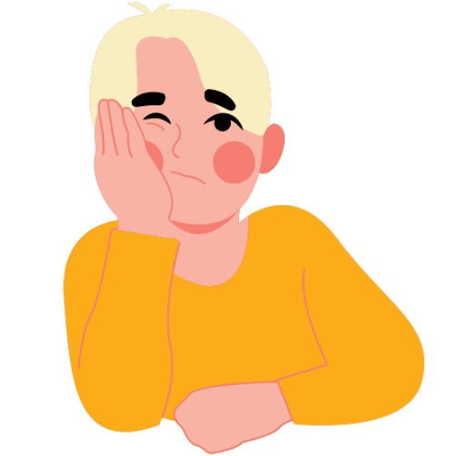
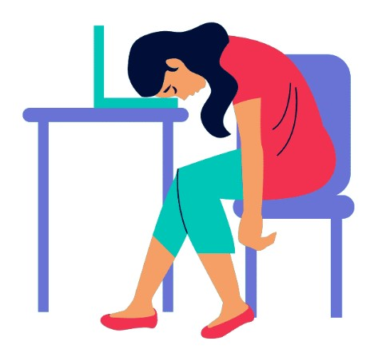
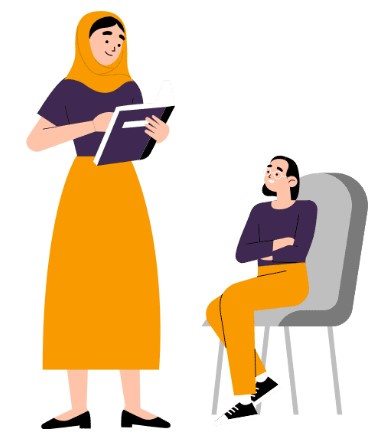
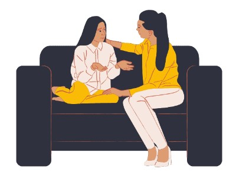
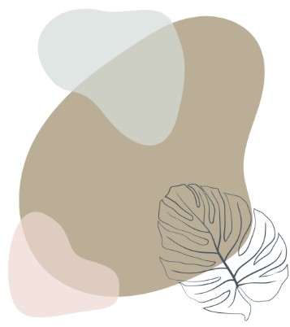
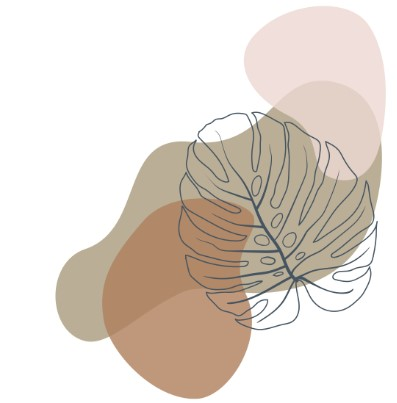

Що таке ПТСР?
У МОЗ розповідають: ПТСР – посттравматичний стресовий розлад – це порушення психічного стану, що може розвинутися після пережитої травматичної події. При цьому симптоми розладу з’являються не одразу, а через певний час (як правило, через 3–6 місяців). Через відтерміновану симптоматику батьки часто можуть не пов’язувати зміни поведінки дитини з пережитими кілька місяців тому подіями, а вважати це погіршенням характеру, ознаками вікових криз тощо.
“Будь-яка травма впливає на життя і здоров’я людини та має свої наслідки. Однак війна – один із найпотужніших впливів на психіку людини”, – каже травматерапевтка, психологиня Тетяна Тимошенко.
Вона пояснює: після травматичних подій є гостра стресова реакція. Її ми відчували з перших днів війни. Ми можемо плакати, тремтіти, не спати, не їсти чи їсти забагато, може щось боліти тощо. Втім, будь-що, що відбувається після травмування, – це нормальна реакція на ненормальні події та обставини.

У нормі така гостра реакція триває кілька днів після події – це відбувається в 90% тих, хто залучений до події. Упродовж місяця тривожні симптоми можуть залишатися в орієнтовно 60% людей.А за місяць – у 20–30%. Це – люди, у яких розвивається посттравматичний стресовий розлад. Ідеться саме про війну, у мирний час ці цифри значно менші.
Кейс України унікальний: у світовій практиці ще не було такого швидкого реагування на запобігання розвитку ПТСР. Нині психологи та психотерапевти роблять усе можливе, щоби зменшити симптоми та надати інформацію із самодопомоги тим, хто постраждав.
Саме тому ГО “Смарт освіта” та Фонд ООН у галузі народонаселення в Україні, UNFPA запустили навчальну програму з психологічної самодопомоги для учительок. Адже всі учасники освітнього процесу зазнали психологічних травм і перебувають у стресовому стані різної важкості.
Так, психологічні проблеми заважають повернутися до нормального навчального процесу. Водночас у більшості вчителів в Україні немає навичок психологічної самодопомоги та не знають, як допомогти дітям впоратися з викликами війни.
ЯКІ СИМПТОМИ

ПТСР (посттравматичний стресовий розлад) – це порушення психічного стану, що може розвинутися після травматичної події, свідком або учасником якої ви були, або в разі, якщо ви дізналися про близьких, які пережили травматичні події (смерть, загроза смерті, серйозні ушкодження, сексуальне насильство. Розлад має дві класифікації: гострий (від місяця до трьох) та, якщо за цей час нічого не минає, – хронічний.
Психологині говорять, що якщо за місяць після травматичної події лишаються будь-які прояви – це сигнал, що треба звернутися по допомогу до фахівця.
Є перелік так званих обов’язкових симптомів, які свідчать про те, що у вас може бути ПТСР:
- людина постійно повторно переживає події, свідком яких була чи про які чула;
- намагається уникати спогадів і переживань. Не спілкується про стресову подію, не згадує цю тему, не ходить повз те місце, де це відбулося;
- є негативні думки та емоційні порушення;
- підвищена тривожність, реактивність, порушуються нормальні реакції; (настороженість, роздратованість, агресивність, ризикована поведінка).
“Не варто самому ставити собі діагноз, адже симптоми, які ви помітили, не означають, що це стовідсотково ПТСР. У будь-якому разі це – тривожний дзвіночок-привід звернутися по допомогу.
А ще ігнорувати симптоми небезпечно, адже разом із ПТСР можуть виникати інші порушення: депресія, тривожні розлади, залежності. Наприклад, люди думають, що кошмари не снитимуться, а страшні думки та спогади не турбуватимуть, якщо випити алкогольний напій.
“Прояви та ризики виникнення ПТСР – однакові у всіх людей. Але вплив на наслідки ПТСР саме у вчителів – дуже важливі для всього українського суспільства. Вони працюють із дітьми – майбутнім країни. І вони є ресурсом та підтримкою життєстійкості дітей, а отже, майбутнього країни. Наслідки ПТСР саме в освітян можуть мати дуже негативний вплив на майбутнє всього українського суспільства”, – каже Ольга Уралова.
ЧОГО НЕ МОЖНА РОБИТИ, ЯКЩО В ЛЮДИНИ СИМПТОМИ ПТСР
Перша допомога, коли ви помічаєте в когось симптоми стресового розладу, – це підтримка, розуміння та уважність. Це може стати ресурсом людини. Варто також порадити звернутися до фахівця.

Натомість не можна:
- наполягати звернутися до психолога чи записувати людину із симптомами до фахівця без її відома;
- казати щось на кшталт “ти хворий”, “іди до лікаря”, “візьми себе в руки”, “досить плакати”;
- давати оцінку: “Дивись, в інших така сама ситуація, а їм нормально”;
- дітей не можна сварити, кричати, бити.
Вчителям треба пам’ятати, що їхні слова доброти, підтримки дуже важливі для дітей. Це сприяє резильєнтності, убезпечує дитину від того, що вона не буде поміж тих людей із ПТСР. Адже підтримка й ресурсність запускають природні процеси, які має психіка людини, і дають змогу вийти зі стресового стану, оговтатися й відновитися.
Вчителям
ЩО ВЖЕ ЗАРАЗ МОЖУТЬ РОБИТИ ВЧИТЕЛІ
- Відвідувати онлайн- і офлайн-заходи з психологами та психотерапевтами про кризову психологічну допомогу для набуття знань, практичних навичок, як бути зараз, як подолати наслідки війни, щоби зберегти здоров’я. Попереджений – отже, озброєний, упевнені психологині. 
- Розуміти, як підтримувати інших. Ідеться про копінгові поведінкові стратегії, які допомагають подолати стрес, пристосуватися. Наприклад, батькам і вчителям важливо знати, як реагувати на ті чи інші стресові симптоми, як побудувати рутинне життя дитини, чи треба її навантажувати в школі тощо.
Батьки та вчителі – перші дорослі люди, які довго та часто перебувають разом із дитиною. Вони мають уміти правильно реагувати на нетипові ситуації. Коли трапляється травмувальна подія на рівні країни, як-от війна, перша категорія, якій треба надати допомогу, – це діти. Дорослі можуть витренувати навички резильєнтності та посттравматичного зростання в дітей, аби їм було легше.
- Аби допомогти собі, людина мусить мати навички саморегуляції. Наприклад, вправи “Метелик” і “4 елементи” із застосуванням білатеральної стимуляції. Ці вправи потрібні для саморегуляції й допомагатимуть у непростих умовах швидше дати собі раду. Психологині кажуть, що вчителі діляться відгуками, що роблять подібні вправи на уроках, і справді бачать, що це працює. Такі техніки можуть убезпечити дітей від появи симптомів ПТСР.
- Аби розвинути резильєнтність, людина має пам’ятати про цінності: духовність, сенс життя, те, яким / якою я хочу бути, у якій країні хочу жити тощо.
- Вміти знаходити ресурси, бачити красу навколо, цінувати те, що маєте. • Розуміти, що думками, можна керувати, не уникати важких тем, а говорити та діяти. Зріла особистість із випрацьованою резильєнтністю знає, що завжди має вибір, може обирати – бути жертвою чи активним творцем своєї книги життя, не знаючи, що буде далі.
Батькам
Дітям
Що робити, якщо у вас діагностували ПТСР?
Якщо вам нещодавно повідомили, що у вас посттравматичний стресовий розлад, ви можете відчути занепокоєння або страх від цього діагнозу. Можливо, наявність чіткого розуміння того, що ви відчували досі, принесе вам певне полегшення. Незалежно від того, що ви відчуваєте, найголовніше – знати, що ви не самотні.
Ваші емоції. На початку після встановлення діагнозу цілком нормально відчувати емоційні гойдалки: від полегшення, що у вашої проблеми є визначення, до шоку і заперечення того, що це відбувається з вами. Всі ці відчуття є нормальними. Продовжуйте спілкуватися. Поділіться своїми почуттями з близькими, друзями, сім'єю або кваліфікованим спеціалістом. Можливо також варто конфіденційно поговорити з вашим роботодавцем/керівником, щоб він розумів, через що ви проходите, і міг надати вам необхідний рівень підтримки. Навіть зміна розташування робочого стола може позитивно вплинути на ваш стан.
Як допомагати собі долати ПТСР в щоденному житті?
- Займайтеся рутиною. Щоденні ритуали: душ, робота, обід за розкладом, прибирання – усе це може допомогти в подоланні проявів ПТСР.
- Просіть про допомогу. Якщо вам потрібні деякі зміни, які допоможуть вам досягти успіху в школі чи на роботі, не бійтеся запитати про них. Наприклад, якщо у вас виникли проблеми з концентрацією, попросіть пройти тести в тихішій кімнаті або попросіть переїхати в тихішу кімнату в офісі.
- Отримайте підтримку. Якщо у вас є друзі та члени сім’ї, які можуть вас підтримати, дайте їм знати, що саме вам потрібно — прогулянка, зустріч на каву чи просто телефонний дзвінок. Також можете спробувати знайти групу підтримки (особисто чи онлайн), щоб зв’язатися з іншими, хто стикався з подібними проблемами.
- Уникайте наркотиків, алкоголю та куріння. Так, може бути спокусливим використовувати такі речовини, щоб уникнути важких проявів ПТСР. Але вживання психоактивних речовин може бути небезпечним і в довгостроковій перспективі ускладнить ваше відновлення.
- Не будьте занадто суворі до себе. ПТСР може викликати почуття провини, сорому та гніву. Коли ви почуваєтеся пригніченими, згадуйте цю пораду. Це допоможе згадати, що проблема не в вас, а в стресовому розладі.

Процес відновлення
ПТСР цілком можливо вилікувати, однак це не завжди просто або легко. А якщо ваше відновлення йде не так, як ви хотіли? Можливо лікування вам здається занадто довгим або ви просто не відчуваєте змін?
Можуть бути причини, чому лікування не працює для вас так швидко, як вам хотілося б. Кілька прикладів, які можуть уповільнити або не допустити того, щоб лікування було настільки ефективним, наскільки воно може бути:
-

- Ви відчуваєте себе негідним. Не слухайте тих, хто не знає про ПТСР, а також не слід занадто пильно прислухатися до внутрішніх діалогів, що стверджують: "Це не спрацює".
- Ви рухаєтеся дуже швидко. Ваш мозок, емоції та розум повинні працювати разом, тому не прискорюйте процес одужання. Візьміть час, який потрібен саме вам.
- Ви збилися зі шляху. Можливо, ви підійшли до якогось елемента відновлення, який повів вас далі від основної травми. Це часто трапляється з людьми з ПТСР. Зупиніться та спробуйте розпізнати це почуття.
- Контроль. Це нормально — використовувати контроль як спосіб "залишатися в безпеці", проте для того, щоб одужання було повноцінним, вам потрібне вільне та відкрите середовище для роботи.
- Ви перевантажені. Проходження лікування може здатися складним завданням — ви почуваєтеся гірше, ніж будь-коли раніше, і тому одужання може здаватися довгою дорогою вперед.
- Емоційні та інші витрати. Одужання може бути вартісним процесом з точки зору ваших почуттів, відносин, грошей та часу. Однак розуміння того, що ви можете повернутися до «колишнього себе» є того вартим.
- Впевненість у собі. Ви можете не почуватися досить впевнено, щоб стати на правильний шлях одужання, тому дотримуйтесь порад професіоналів.
- Відповідальність. Вам необхідно емоційно "прийняти" лікування та одужання – без цього ви будете відірвані від мети. Якщо ви помітили у себе якісь із цих почуттів, поговоріть зі своїм терапевтом або близькою людиною, аби полегшити своє життя з ПТСР.
Корисні посилання
Розвиток психологічної стійкості вчительства
ГО “Смарт Освіта” та Фонд ООН у галузі народонаслення в Україні, UNFPA оголошує набір учителів/ьок на першу частину навчальної програми по вдосконаленню навичок психологічної самодопомоги.
Як допомогти дитині з посттравматичним розладом. Поради від МОЗ
У МОЗ пояснили, що таке посттравматичний стресовий розлад, як він проявляється в дітей різного віку, а також як допомогти дитині з ПТСР.
Психологічна допомога під час війни: де і як отримати
Посилання на 15 безкоштовних ресурсів та низка рекомендацій, як допомогти людині у кризовій ситуації. Добірку підготував юрист-практикант Сумської ГО «Північна правозахисна група» Дмитро Мурач.